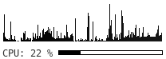
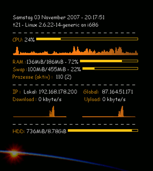
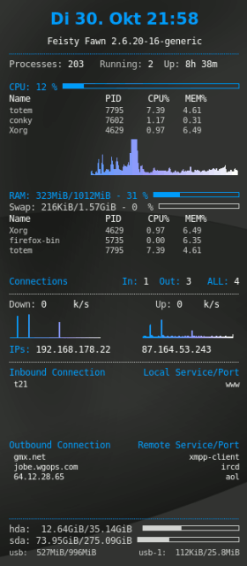
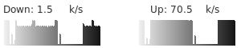

Conky
Dieser Artikel wurde für die folgenden Ubuntu-Versionen getestet:
Ubuntu 16.04 Xenial Xerus
Ubuntu 14.04 Trusty Tahr
Zum Verständnis dieses Artikels sind folgende Seiten hilfreich:
Conky  ist ein vielseitiger Systemmonitor für den Desktop. Neben Statistiken zu allen denkbaren Ressourcen wie Prozessor-, Speicher- und Netzwerk-Auslastung bringt Conky Email-Benachrichtigungen und Titelanzeigen für den Music Player Daemon und verschiedene Audioplayer auf den Desktop. Die Funktionen von Conky sind zusätzlich durch Skripte erweiterbar.
ist ein vielseitiger Systemmonitor für den Desktop. Neben Statistiken zu allen denkbaren Ressourcen wie Prozessor-, Speicher- und Netzwerk-Auslastung bringt Conky Email-Benachrichtigungen und Titelanzeigen für den Music Player Daemon und verschiedene Audioplayer auf den Desktop. Die Funktionen von Conky sind zusätzlich durch Skripte erweiterbar.
Conky ist als Fork auf der Codebasis des Programms Torsmo entstanden und ist bekannt als besonders ressourcenschonender Systemmonitor, der individuell konfigurierbar ist.
Durch die Vielzahl der Funktionen kann Conky bei entsprechenden Einstellungen aber auch einen großen Teil der Systemressourcen belegen; insbesondere die Variablen zum Einfügen von Log-Dateien ($tail), zur Prozess-Auflistung ($top), Schrift-Einstellung ($font) und für Graphen ($graph) verursachen relativ hohe Last.

Conky ist häufig Bestandteil des Desktops bei Linux-Distributionen, die mit schlanken Fenstermanagern wie Fluxbox arbeiten, da Conky die Ausgaben direkt in das Root-Fenster schreiben kann. Da aber auch die Möglichkeit besteht, Conky in einem eigenen Fenster laufen zu lassen, das undekoriert und transparent ist, stellt eine direkte Anzeige auf dem Desktop auch unter Xfce kein Problem dar. Für den GNOME- und KDE-Desktop gibt es Hilfsmittel, damit die Anzeige trotz technischer Hindernisse gelingt.
Installation¶
Conky kann als Paket aus den Ubuntu-Quellen installiert werden. Das Kompilieren des Quellcodes ist in einem eigenen Artikel beschrieben.
Es stehen drei verschiedene Pakete zur Auswahl, von denen nur eines installiert [1] werden kann, da die Pakete einander ausschließen:
| Conky-Pakete | ||
| Mit den meisten Funktionen | Standard-Funktionen | Basispaket |
Paketliste zum Kopieren: sudo apt-get install conky-all
sudo aptitude install conky-all
|
Paketliste zum Kopieren: sudo apt-get install conky-std
sudo aptitude install conky-std
|
Paketliste zum Kopieren: sudo apt-get install conky-cli
sudo aptitude install conky-cli
|
| Desktopversion mit Unterstützung (fast) aller optionalen Komponenten | Desktopversion mit den meistgebräuchlichen Komponenten | Basisversion für Systeme ohne Desktop (keine grafische Ausgabe) |
 mit
mit Das Paket conky ist nur noch ein Dummy-Paket für Upgrades älterer Ubuntu-Versionen und kann nach dem Upgrade sicher entfernt werden. Es wurde durch das Paket conky-all ersetzt.
Benutzung¶
Zunächst sollte eine (versteckte) Konfigurationsdatei .conkyrc im Homeverzeichnis des Benutzers erstellt werden.[2] Hierzu kann als Ausgangspunkt die System-weite Konfigurationsdatei /etc/conky/conky.conf kopiert werden.
Weitere Beispiel-Konfigurationen mit Bildschirmfoto, Konfigurationsdatei und zusätzlichen Skripten findet man auf der Projektseite und in verschiedenen Foren-Threads.
Conky kann nun über den Befehl "conky" gestartet werden [3], sofern nicht noch die Konfigurationsdatei ~/.conkyrc angepasst werden soll.
Nach einer Änderung an der Konfigurations-Datei startet sich "conky" bei neueren Versionen automatisch neu. Mit älteren Versionen von "conky" kann folgender Befehl [4] zum Neustarten verwendet werden:
killall -SIGUSR1 conky
Will man das Conky automatisch mit dem System startet, hilft der Artikel Autostart. Eventuell ist auch der Abschnitt Autostart verzögern zu beachten.
Startparameter¶
|  |
| Ein Conky Beispiel |
| .conkyrc, Public-IP-Skript |
Dem Befehl "conky" können verschiedene Startparameter mitgegeben werden, deren Funktionen jedoch größten Teils auch über Konfigurationsdateien genutzt werden können.
| Parameter | Argument | Funktion |
-v, -V | Versionsangabe anzeigen und beenden | |
-a | Ausrichtung | Ausrichtung auf dem Bildschirm, top/bottom, left/right oder none |
-b | double buffering benutzen | |
-c | Datei | Konfigurationsdatei, die statt der ~/.conkyrc benutzt werden soll |
-d | "Daemonize". Conky im Hintergrund ausführen. | |
-f | Schriftart | Schriftart setzen |
-h | Hilfe anzeigen und beenden | |
-o | Conky im eigenen Fenster starten | |
-t | Text, Variablen | Text der angezeigt wird. Hochkommata setzen (z.B. -t ’ $uptime ’)! |
-u | Sekunden | Update-Intervall der Anzeige |
-w | Fenster-ID | Fenster, in das die Anzeige geschrieben wird. |
-x | X-Koordinate | X-Position der Anzeige |
-y | Y-Koordinate | Y-Position der Anzeige |
Konfiguration¶
Die Konfigurationsdatei ~/.conkyrc besteht aus zwei Teilen: im ersten Teil werden Programm-Einstellungen festgelegt, im zweiten Teil, was auf dem Desktop angezeigt wird. Der zweite Teil wird mit einer Zeile eingeleitet, die nur den Begriff TEXT enthält. Neben der nachfolgend beschriebenen manuellen Konfiguration kann ein grafischer Conky Manager Einsteigern viel Arbeit abnehmen. Sprich: schicke Designs brauchen nur ausgewählt zu werden. Erst wenn Probleme auftauchen oder man Details ändern möchte, wird die manuelle Konfiguration wieder interessant.
Einstellungen¶
In folgender Tabelle sind nur einige Einstellungen aufgeführt, alle verfügbaren Möglichkeiten sind in der Projekt-Dokumentation zu finden. Bei Variablen, denen ein Wahrheitswert zugewiesen wird, sind die Angaben true oder false und yes oder no möglich.
| Variable | Verwendung |
alignment | Ausrichtung auf dem Bildschirm, mögliche Werte sind top_left, top_right, bottom_left, bottom_right, middle_left, middle_middle, middle_right und none (Abkürzungen: tl,tr,bl,br,ml,mm,mr) |
gap_x | Linker oder rechter Abstand in Pixeln von der Position, die über alignment festgelegt wurde. |
gap_y | Oberer oder unterer Abstand in Pixeln von der Position, die über alignment festgelegt wurde. |
maximum_width | Maximale Breite des Fensters |
minimum_size | Minimale Breite des Fensters |
own_window | Eigenes Fenster benutzen (true/false). Voraussetzung für gleichzeitigen Gebrauch von Conky und Nautilus. |
own_window_colour | Wenn kein transparenter Hintergrund verwendet wird, kann eine Hintergrund-Farbe gewählt werden. Möglich sind Hexadezimalwerte (z.B. #ffffff) oder RGB-Farbnamen (siehe /usr/lib/X11/rgb.txt) |
own_window_hints | Verhalten des Fensters (undecorated, above|below, sticky, skip_taskbar, skip_pager). |
own_window_title | Manuelles Setzen des Fensternamens. Standard ist <hostname> - conky. |
own_window_transparent | (Pseudo-) Transparenter Hintergrund (true/false). |
own_window_type | Art des Fensters. normal (Standard), desktop (keine Fensterdekoration, Sticky auf allen Arbeitsflächen, nicht im Pager aufgeführt) oder override (wird nicht durch den Fenstermanager kontrolliert), und panel. |
draw_borders | Rahmen um Text. |
draw_graph_borders | Rahmen um Graphen. |
border_inner_margin | Rahmen-Abstand in Pixeln. |
border_width | Rahmen-Breite in Pixeln. |
stippled_borders | Abstände gestrichelter Rahmen gemessen in Pixeln. |
default_color | Standard Text- und Rahmen-Farbe. |
font | Schriftart |
uppercase | Verwende nur Großbuchstaben (true/false) |
use_xft | Benutze Xft (Anti-Aliasing für Schrift etc.) |
xftalpha | Alpha-Wert der Xft-Schriftart. Muss ein Wert zwischen 1 und 0 sein. |
xftfont | Xft Schriftart, die verwendet werden soll. |
use_spacer | Setzt Abstände hinter bestimmte Objekte, damit diese andere nicht verschieben. Dies funktioniert nur mit Mono-Schriften wie "Bitstream Vera Sans Mono" (left/right/none). |
double_buffer | Benutzen des dbe-Modul des XServer (beseitigt Flackern). Es wird dringend empfohlen, dies nur zu verwenden, wenn Conky in einem eigenen Fenster läuft, damit der Buffer nicht zu groß wird. |
total_run_times | Gesamtzahl der Updates bis Conky beendet wird. Mit dem Wert 0 läuft Conky endlos. |
update_interval | Zeitabstand zwischen Auffrischungen der Anzeige in Sekunden |
imap | Standard IMAP-Mailserver. Argumente sind: host user pass [-i interval] [-f folder] [-p port] [-e command]. Standard-Port ist 143, Standard-Ordner ist INBOX, Standard-Intervall ist 5 Minuten. Wird als Passwort ein * verwendet, wird das Passwort beim Start von Conky abgefragt. |
mail_spool | Mail-Spool für die Email-Eingangsprüfung |
pop3 | Standard POP3-Mailserver. Argumente sind: host user pass [-i interval] [-p port] [-e command]. Standard-Port ist 110, Standard-Intervall ist 5 Minuten. Wird als Passwort ein * verwendet, wird das Passwort beim Start von Conky abgefragt. |
TEXT | Danach beginnt die Eingabe von Variablen und Text für die Anzeige |
Anzeige¶
Die Anzeige wird vom TEXT-Abschnitt bestimmt; in folgender Tabelle sind nur einige Variablen aufgeführt, alle verfügbaren Möglichkeiten sind in der Projekt-Dokumentation zu finden. In einem weiteren Artikel werden einige Audio-Anzeigen erläutert.
|  |
| Conky im Ubuntu Studio-Look |
| .conkyrc, Public-IP-Skript |
| Variable | Argumente | Verwendung |
kernel | Kernelversion | |
time | z.B.: ${time %a %d. %b %k:%M} | Datum und Uhrzeit (im Beispiel: "Di 30. Okt 21:58") |
uptime | Laufzeit des Rechners | |
acpitemp | Temperatur des Prozessors | |
cpu | Prozessor-Auslastung in Prozent | |
cpubar | Länge in Pixeln | CPU-Auslastung als Leisten dargestellt |
freq | aktuelle Taktfrequenz des Prozessors | |
mem | Verwendeter Arbeitsspeicher | |
membar | Länge in Pixeln | Speicher-Auslastung als Leisten dargestellt |
memperc | Speicher-Auslastung in Prozent | |
memmax | Speichermenge | |
swap | Verwendeter Swap-Speicher | |
swapbar | Länge in Pixeln | Swap-Speicher-Auslastung als Leisten dargestellt |
swapperc | Swap-Speicher-Auslastung in Prozent | |
swapmax | Swap-Speichermenge | |
addr | Interface, z.B. eth0 | Anzeige der IP-Adresse für Netzwerkinterface |
wireless_link_qual_perc | Interface, z.B. ath0 | Signalstärke bei Wireless LAN |
downspeed | Interface, z.B. eth0 | Download-Geschwindigkeit in kbyte/s |
downspeedf | Interface, z.B. eth0 | Download-Geschwindigkeit in kbyte/s mit einer Dezimalstelle |
downspeedgraph | Interface Höhe in Pixeln,Breite in Pixeln, z.B eth0 32,120 | Download-Geschwindigkeit als Graph |
upspeed | Interface, z.B. eth0 | Upload-Geschwindigkeit in kbyte/s |
upspeedf | Interface, z.B. eth0 | Upload-Geschwindigkeit in kbyte/s mit einer Dezimalstelle |
upspeedgraph | Interface Höhe in Pixeln,Breite in Pixeln, z.B eth0 32,120 | Upload-Geschwindigkeit als Graph |
wireless_ap | Interface, z.B. ath0 oder wlan0 | MAC-Adresse des AP |
wireless_bitrate | Interface, z.B. ath0 oder wlan0 | Bitrate der Verbindung |
wireless_essid | Interface, z.B. ath0 oder wlan0 | Essid des AP |
wireless_mode | Interface, z.B. ath0 oder wlan0 | Mode der Schnittstelle |
wireless_link_bar | Höhe in Pixeln Interface, z.B 8 ath0 | Signalstärke als Leiste dargestellt |
wireless_link_qual | Interface, z.B. ath0 oder wlan0 | Signalstärke in Prozent |
acpiacadapter | Rechner am Stromnetz oder Batterie | |
battery | Akku, z.B. BAT0 | Status der Batterie (Standard ist BAT0) |
fs_size | Mountpoint, z.B. /dev/sda1 | Größe einer Partition |
fs_used | Mountpoint, z.B. /dev/sda1 | Verbrauchter Speicherplatz einer Partition |
fs_free | Mountpoint, z.B. /dev/sda1 | Freier Speicherplatz einer Partition |
exec | Befehl | Ausführen eines beliebigen Befehls |
execi | Intervall Befehl | Ausführen eines Befehls in einem bestimmten Intervall (Sekunden) |
if_running | Prozess | Wenn ein Prozess existiert; Abschluss mit $endif |
if_existing | Datei | Wenn eine Datei existiert; Abschluss mit $endif |
if_mounted | Mountpoint, z.B. /media/usb0 | Wenn ein Datenträger eingehangen ist; Abschluss mit $endif |
Diagramme¶
 Conky kann für verschiedene System-Ressourcen Diagramme in Form von Leisten und Graphen darstellen. Als Beispiel dient hier die Auslastung der Netzwerkkarte eth0. Bei einem Graphen für die Netzwerk-Auslastung müssen das Interface (eth0), Höhe und Breite (32,120), die Gradienten-Farben (efefef, 171717) und optional die Skalierung (2) angegeben werden.
Down: ${downspeedf eth0} k/s ${offset 80}Up: ${upspeedf eth0} k/s
${downspeedgraph eth0 32,120 efefef 171717 2} ${offset 40} ${upspeedgraph eth0 32,120 efefef 171717 2}Bilder¶
Conky unterstützt das Einbinden von Bildern (nur das Paket conky-all).
${image /home/user/beispielbild.png}Zusätzlich kann die Position gemessen von der rechten oberen Ecke mit -p x,y und eine Skalierung mit -s BREITExHÖHE angegeben werden. Zum Beispiel:
${image /home/user/beispielbild.png -p 20,20 -s 200x300}Mit dem Paramter -f INTERVALL lässt sich ein Intervall für die Zwischenspeicherung festlegen und mit -n wird das Bild gar nicht zwischengespeichert. Bilder können mit $execp $lua_parse und anderen Methoden zur Laufzeit verändert werden, was in diesem Artikel aber nicht behandelt wird.
Textformatierung¶
Der Text kann in Ausrichtung, Format und Farbe unterschiedlich gestaltet werden. Dazu wird einer Variablen ein Wert zugewiesen, der erst aufgehoben wird, wenn die Variable ohne Argument neu genannt wird.
${color #009bf9} Farbiger Text $color Text in Standard-FarbeBei diesem Beispiel wurde eine Farbe (#009bf9) für den Text gewählt und anschließend wieder auf den Standard ($color) zurückgesetzt. Es gibt viele weitere Formatierungsmöglichkeiten, beispielsweise folgende:
| Variable | Verwendung |
offset X | Abstand von X Pixeln zwischen zwei Elementen |
alignr | Rechtsbündiger Text |
alignc | Zentrierter Text |
font Monospace:size=8 | Schriftart und -größe festlegen |
Links¶
Extern¶
Conky Collection for Linux
- Sammlung diverser Conky-DesignsConky-Anleitung
 - howtoforge.de, 11/2007
- howtoforge.de, 11/2007Conky – der kleine Systemmonitor
- FreiesMagazin, 07/2007Conky mit Themes personalisieren
- mit schönen BeispielbildernConkyPress
- Extension um Wordpress blog Statistiken in Conky darzustellen
Foren¶
Es gibt einige Foren, in denen Benutzer ihre Conky-Einstellungen mit Bildschirmfoto für andere Benutzer veröffentlichen:

- Erstellt mit Inyoka
-
 2004 – 2017 ubuntuusers.de • Einige Rechte vorbehalten
2004 – 2017 ubuntuusers.de • Einige Rechte vorbehalten
Lizenz • Kontakt • Datenschutz • Impressum • Serverstatus -
Serverhousing gespendet von